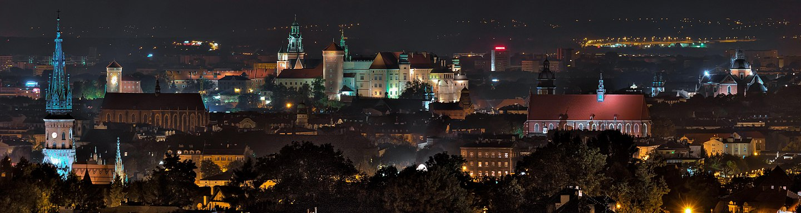
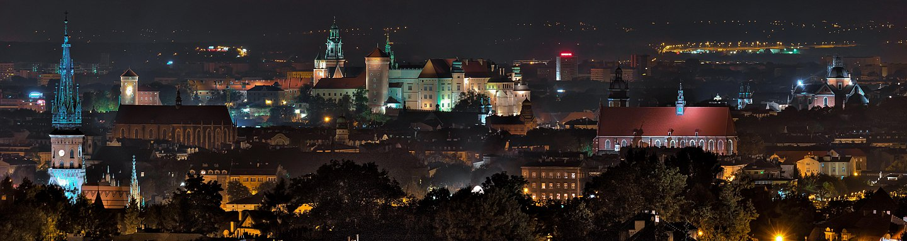

Poland is my motherland and it is very beautifull. By visiting Poland you can experience all four season depends on the months. Poland offeres lots of beautifull skylines that differes in color in each season. If you like water you can either visit northern cities such as Gdansk and swim in the Baltic sea or you can travel deeper into central Poland and kayaking on many rivers and lakes. If you like hiking the best place would be Carpathian Mountains located in the south part of Poland. Every big city offers different attractions, historical places and buildings. Also, I could not forget about delicious food. Each part of Poland has own traditional dishes that noone can miss.
History Overview
Poland is a country located in Central Europe. It is divided into 16 administrative provinces, covering an area of 312,696 km2 (120,733 sq mi), and has a largely temperate seasonal climate. Poland has a population of nearly 38.5 million people, and is the fifth-most populous member state of the European Union.Warsaw is the nation's capital and largest metropolis. Other major cities include Kraków, Łódź, Wrocław, Poznań, Gdańsk, and Szczecin. Poland's territory extends from the Baltic Sea in the north to the Sudetes and Carpathian Mountains in the south. The country is bordered by Lithuania and Russia (Kaliningrad Oblast) to the northeast, Belarus and Ukraine to the east, Slovakia and the Czech Republic to the south, and Germany to the west.
To learn more about must see cities scroll down to the tab bar.
Gallery
Warsaw - The Capitol of Poland
Warsaw is the capitol of Poland and it is the biggest city in the country. Warsaw is locatated on the east-central part of the country along Vistula River. Warsaw is the political centre of the country. All state agencies are located in the city, including the Polish Parliament, the Presidential Office, the Supreme Court, Warsaw Stock Exchange nad the National Polish Bank. Warsaw is also a home of Frontex agency which is The European Border and Coast Guard Agency. The tallest building in Poland is PKiN, located in Warsaw and its height is 237m. Palace of Culture and Science was invented by Jozef Stalin. Constructed in 1955, it houses various public and cultural institutions such as cinemas, theatres, libraries, sports clubs, university faculties and authorities of the Polish Academy of Sciences. Since 2007 it has been enlisted in the Registry of Objects of Cultural Heritage. he Palace of Culture and Science is a highly controversial building for some, and is often viewed as a reminder of Soviet influence over the Polish People's Republic, especially due to its construction during mass violations of human rights under Joseph Stalin.
Restaurants:1. NINE'S:
In 2020 famous polish football player Rober Lewandowski openned own restaurant/sport bar "NINE'S." NINES is not a random name. The number nine dominates inside the restaurant due to Lewandowski plays with number nine. The restaurants offers bawarian pretzels in shape of number nine. The restaurants is located on four levels and offers four different concepts and experience. The first two floors offers America, Asian, adn Polish cusine. The third and fourth floor is used as an event lounge with telescopic grandstands and a giant screne, and a collection of legendary objects related to the history of sport.2. Falla Warszawa
Falla is located in the heart of the old town, close to the Royal Route in Warsaw. This cozy restaurant offers modern plant cuisine based on recipes from the Middle East. Here you can try hummus, different vegetarian wraps, falafels, and many more! It can be a perfect place to rest for a while after walking in the city or quickly grab some lunch during your travel.3. Manekin
Naleśniki, the Polish name for crepes, are one of the most popular dishes in Poland, present in most families from time to time. Here, in Manekin, located on the Constitution Square, you can try virtually all possible variations of this dish - savory and sweet ones, with different sauces, vegetarian or not, also pancakes, desserts, and soups...Everything you need to be happy!4. Krowawarzywa
This restaurant serves vegetarian food but even vegans can find something like vegan burgers or wraps.Augustow
Augustow is my home town and it is a resort town in northeastern Poland. It is known for its therapeutic spas. Flanked by lakes, the town also borders the Augustow Primeval Forest. At the junction of the river and the Augustow Canal, the Augustow Canal Museum traces the waterway's 19th-century origins as a trade route. Forests and wetlands covers Biebrza National Park to the southh and Wigry National Park north of town. One of the traditional dishes are kartacze and potato babka. One of the popular regional cakes are sekacz and mrowisko. Augustow is a perfect place for kayaking, sailing, water skiing or hiking. In 2014 Augustow was honored as a "Nicest City in Poland."
Krakow
Krakow is a city in the southern Poland. Krakow is known for well-preserved medival core and Jewish quarter. In 1978, the entire old town of Krakow was named a UNESCO World Heritage Site. The Main Market Square was built in the 13th century and it is the largest medival market square in Europe. St. Marys Basilica contain most elaborate Ghotic altarpiece in Europe. Wawel Castle and Wawel Cathedral are must see attractions.
 
